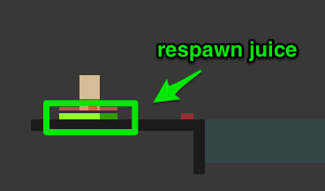
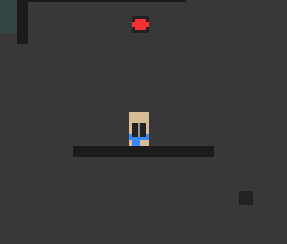
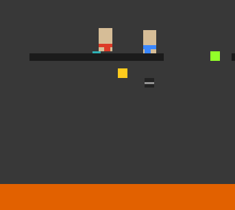
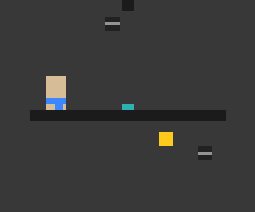
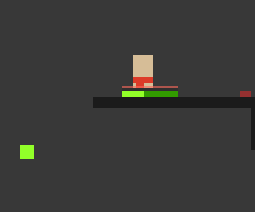
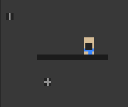

SPACE JOUST
Instructions
Welcome to SPACE JOUST. It should really be called FLAPPY SUMO BATTLE, but I haven't gotten around to changing the name yet.
Anyway, welcome.
SPACE JOUST is a same-keyboard multiplayer game, so you'll need a physical friend to play. This is solely because
- The developer (@wjagodfrey) has fond memories of playing Gun Star Heros and Golden Axe with his big brother and having a tantrum when he couldn't win.
- The developer doesn't have time/ is too lazy to add A.I. or online multiplayer. It's really a miracle this game exists at all.
The goal in SPACE JOUST is to remove all of your enemy's respawn juice.
Every time a player dies and respawns they lose a little bit of respawn juice.
So to win, you have to kill your opponent. You can do this in a couple of different ways:
Bombs
Bombs come in four different flavours, depending on the directions they bounce in. These are up and down, left and right, all at once, or not at all.Lazors
Lasers fry people and set off bombs. They can be turned on by- stepping on buttons
- bombs bouncing off buttons
Getting Pushed Into The Lava
Yes! This really is a game about flappy sumo wrestlers where the ground is lava an there are bombs everywhere.
This introduces the sumo aspect of the game as well. Just bounce into someone to set them sliding off their ledge and into the lava.
Want to really hurry things along? Butt slap them from above! The sound alone is so satisfying.
Items
No Wings
Stops your opponents from flapping for a short while.
Add Life
Gives you some more respawn juice.
Bombs
Gives you a bomb to drop. The lines on the bomb indicate the direction it will bounce in.
A bomb arms only when you move away from it.
Controls
M - mute in-game music
Red Player
W - flap (keep pressing it!)
S - dive (butt slap your opponent!)
A - left
D - right
G - drop ze bombs
Blue Player
⬆ - flap (keep pressing it!)
⬇ - dive (butt slap your opponent!)
⬅ - left
➡ - right
. - drop ze bombs